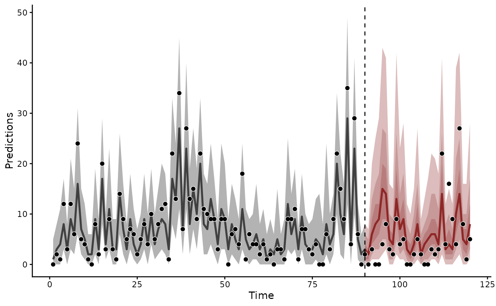
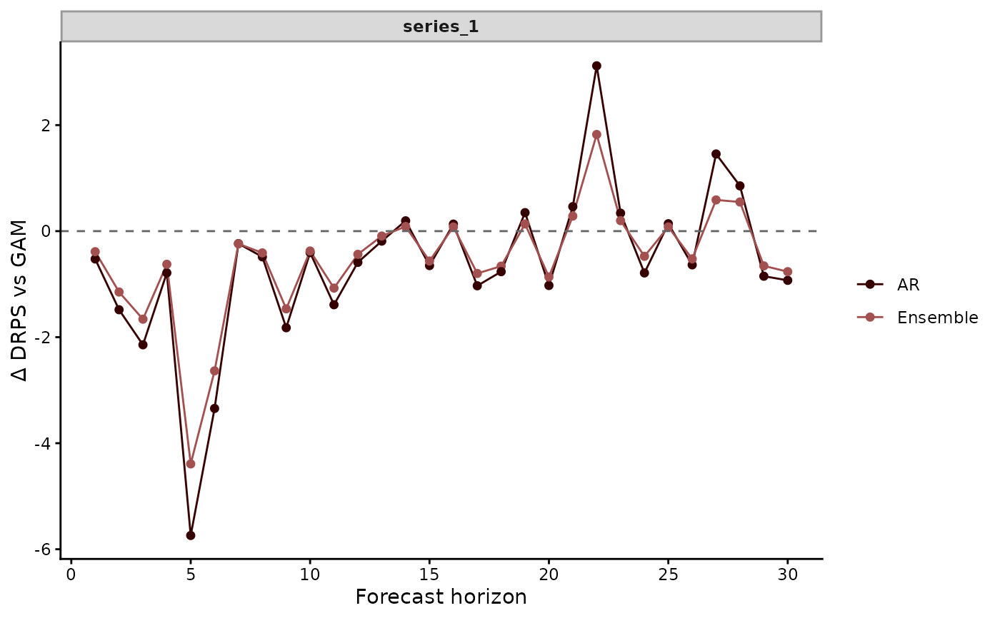

Combine forecasts from mvgam models into a weighted ensemble
Source:R/ensemble.mvgam_forecast.R
ensemble.mvgam_forecast.RdBuild a single mvgam_forecast from the hindcast and forecast
draws of two or more mvgam_forecast objects. Each input supplies
a share of the draws set by its weight. Weights are even by
default.
Usage
ensemble(object, ...)
# S3 method for class 'mvgam_forecast'
ensemble(object, ..., weights = NULL, ndraws = 5000L, seed = NULL)Arguments
- object
An
mvgam_forecastobject returned byforecast.mvgam()orhindcast.mvgam().- ...
More
mvgam_forecastobjects to combine.- weights
Either
NULL(the default, equivalent to even weighting), or a numeric vector with one non-negative entry per supplied forecast. The weights are normalised to sum to 1. Strategies such as stacking need the fitted models. Compute them withloo_model_weights.mvgam()on the fits, or withloo_model_weights.mvgam_lfo()on theirlfo_cv()results. Pass the numeric result here.- ndraws
Positive integer giving the total number of ensemble draws to return per series. Defaults to
5000. A model allocated more draws than it holds is sampled with replacement.- seed
Optional integer seed. The session's random state is restored when the call returns.
Value
An object of class mvgam_forecast containing the
ensembled hindcasts and forecasts. Suitable for
plot.mvgam_forecast() and score.mvgam_forecast().
Attribute weights records the per-model weights used.
Attribute ndraws_per_model records the integer draw
counts drawn from each input.
Details
Per-model weights are split into integer draw counts
that sum to ndraws by the largest-remainder rule, after
brms::round_largest_remainder(). Each model then gives one set
of sampled draws. Every series, in the hindcasts and in the
forecasts, takes that same set. The ensemble keeps the dependence
between series and the pairing of each hindcast with its forecast.
The returned object takes its series names, family, training data and test data from the first input. All inputs must share the series names, the hindcast lengths, the forecast horizons and, when present, the test observations.
A multivariate fit on a wide frame gives one forecast whose series are its responses. The ensemble is a forecast over those series. On a long frame the ensemble keeps one forecast per response. Every response takes the same draws.
See also
score.mvgam_forecast() scores the ensemble.
loo_model_weights.mvgam_lfo() computes weights from forecast
performance. pp_average.mvgam() averages predictions in place of
forecasts. The
forecast evaluation article
weights an ensemble by leave-future-out stacking weights.
Other forecasting:
compare_scores(),
forecast.mvgam(),
hindcast.mvgam(),
lfo_cv.mvgam(),
score.mvgam_forecast()
Examples
# \dontrun{
set.seed(1)
simdat <- sim_mvgam(family = poisson(), n_series = 1L,
n_timepoints = 120L, trend_model = AR())
# Two models of one count series: a smooth of x with and without
# an AR(1) trend
mod_gam <- mvgam(y ~ s(x), data = simdat$data_train,
family = poisson(), chains = 2, silent = 2)
#> Warning: 25 of 2000 (1.0%) transitions ended with a divergence.
#> See https://mc-stan.org/misc/warnings for details.
mod_ar <- mvgam(y ~ s(x), trend_formula = ~ AR(p = 1),
data = simdat$data_train, family = poisson(),
chains = 2, silent = 2)
#> Warning: 5 of 2000 (0.0%) transitions ended with a divergence.
#> See https://mc-stan.org/misc/warnings for details.
# }
# \dontrun{
fc_gam <- forecast(mod_gam, newdata = simdat$data_test)
fc_ar <- forecast(mod_ar, newdata = simdat$data_test)
# An ensemble that draws 30% of its draws from the GAM
ens <- ensemble(fc_gam, fc_ar, weights = c(0.3, 0.7))
attr(ens, "ndraws_per_model")
#> fc_gam fc_ar
#> 1500 3500
plot(ens)

# The ensemble scored against its components
scores <- compare_scores(fc_gam, fc_ar, ens, score = "drps",
model_names = c("GAM", "AR", "Ensemble"))
plot(scores, relative = "GAM")

# }